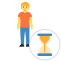
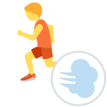
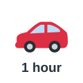
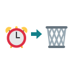
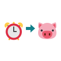
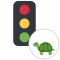
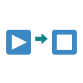
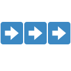
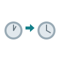

wait
ينتظر
I waited for an hour at the station.
انتظرت ساعة في المحطة.
Time Verbs
مرّر الماوس على السماعة أو اضغط عليها لتسمع النطق. السماعة الكبيرة نطق أمريكي (وهو المكتوب بالرموز)، وزر UK نطق بريطاني.

ينتظر
I waited for an hour at the station.
انتظرت ساعة في المحطة.
يُسرع / يستعجل
Hurry up, or we'll miss the train.
أسرع وإلا فاتنا القطار.

يندفع / يتعجل
Don't rush your decision.
لا تتعجل في قرارك.
يستمر / يدوم
The meeting lasted two hours.
استمر الاجتماع ساعتين.

يستغرق
It takes me an hour to get to work.
يستغرق وصولي إلى العمل ساعة.
يقضي (وقتًا)
I spend too much time on my phone.
أقضي وقتًا طويلًا على هاتفي.

يُضيّع
Don't waste your time on this.
لا تضيّع وقتك في هذا.

يوفّر
This new system saves a lot of time.
يوفر هذا النظام الجديد وقتًا كثيرًا.
يحدد موعدًا
Let's schedule the call for Monday.
لنحدد موعد المكالمة يوم الاثنين.
يغيّر الموعد
Can we reschedule our meeting?
هل يمكننا تغيير موعد اجتماعنا؟
يؤجّل
The match was postponed because of rain.
تأجلت المباراة بسبب المطر.

يؤخّر
Heavy traffic delayed our arrival.
أخّر الازدحام الشديد وصولنا.
يُلغي
They had to cancel the flight.
اضطروا إلى إلغاء الرحلة.
ينتهي (صلاحيته)
My passport expires next month.
ينتهي جواز سفري الشهر القادم.
يبدأ
The lesson begins at ten.
يبدأ الدرس في العاشرة.
يبدأ
What time does the film start?
متى يبدأ الفيلم؟
يُنهي
I'll finish this by tonight.
سأنهي هذا بحلول الليلة.

ينتهي
The contract ends in June.
ينتهي العقد في يونيو.

يستمر / يواصل
Please continue with your work.
من فضلك واصل عملك.

يمر (الوقت)
Time passes quickly when you're busy.
يمر الوقت بسرعة حين تكون مشغولًا.
يغلبه النوم فيتأخر
I overslept and missed the bus.
غلبني النوم وفاتتني الحافلة.
يضبط
Don't forget to set your alarm.
لا تنسَ ضبط منبهك.
يذكّر
Please remind me about the appointment.
من فضلك ذكّرني بالموعد.
ستسمع كلمة من كلمات الصفحة، فاضغط على الصورة التي تعبر عنها.
الكلمات المميزة هي كلمات هذه الصفحة. اضغط على أي كلمة ليبدأ الصوت منها ويكمل ما بعدها.
Hurry up! The film will start in ten minutes.
أسرع! سيبدأ الفيلم بعد عشر دقائق.
Don't rush me. I can't find my ticket. Please wait a second.
لا تتعجلني. لا أجد تذكرتي. من فضلك انتظر ثانية.
Why are you always late? Did you oversleep again?
لماذا تتأخر دائمًا؟ هل غلبك النوم مجددًا؟
I forgot to set my alarm. Remind me next time, please.
نسيت ضبط منبهي. من فضلك ذكّرني في المرة القادمة.
How long will the film last?
كم سيستمر الفيلم؟
About two hours. And it will take us twenty minutes to get there.
نحو ساعتين. وسيستغرق وصولنا إلى هناك عشرين دقيقة.
We could save time if we take the metro.
يمكننا توفير الوقت إذا ركبنا المترو.
Good idea. By the way, we have to reschedule Saturday's dinner.
فكرة جيدة. بالمناسبة، علينا تغيير موعد عشاء السبت.
Do we really need to postpone it? Or do you want to cancel it?
هل علينا تأجيله حقًا؟ أم تريد إلغاءه؟
Just delay it by one week. My passport will expire soon, and I have to go to the embassy.
أخّره أسبوعًا واحدًا فقط. سينتهي جواز سفري قريبًا، وعليّ الذهاب إلى السفارة.
Fine. We can schedule it for next Saturday. Did you finish the report, by the way?
حسنًا. يمكننا تحديد موعده يوم السبت القادم. هل أنهيت التقرير بالمناسبة؟
I'll finish it tonight. I don't want to spend the whole weekend on it, or waste another day.
سأنهيه الليلة. لا أريد أن أقضي عطلة نهاية الأسبوع كلها فيه، أو أن أضيّع يومًا آخر.
Look, the hours pass so quickly! When does the show begin?
انظر، الساعات تمر بسرعة! متى يبدأ العرض؟
At eight. Let's continue this talk after the film. I just hope it doesn't end too late!
في الثامنة. لنواصل هذا الحديث بعد الفيلم. أرجو فقط ألا ينتهي في وقت متأخر جدًا!
الكلمات المميزة هي كلمات هذه الصفحة. اضغط على أي كلمة ليبدأ الصوت منها ويكمل ما بعدها.
Good habits begin with small decisions. If you often oversleep, set two alarms, and place them far from your bed. Do not spend your first hour looking at your phone. It is easy to waste a whole morning that way. Instead, make a short list of tasks and start with the most difficult one. A simple list can save hours every week. When you schedule a task, be honest about how long it will take and how long it will last. If something urgent happens, reschedule it, but do not postpone it again and again. Each time you delay important work, it becomes harder to begin. Do not cancel your plans unless you have to. Check your documents too, because a passport or a license can expire at the worst moment, so ask a friend to remind you. Of course, there will be busy days when you must hurry from one place to another, but try not to rush your decisions. Sometimes you should stop and wait. When you finish one job, take a breath and continue with the next. The days pass quickly, and every project must end eventually.
تبدأ العادات الجيدة بقرارات صغيرة. إذا كان النوم يغلبك كثيرًا، فاضبط منبهين، وضعهما بعيدًا عن سريرك. لا تقضِ ساعتك الأولى في النظر إلى هاتفك. فمن السهل أن تضيّع صباحًا كاملًا بهذه الطريقة. بل ضع قائمة قصيرة بالمهام وابدأ بأصعبها. فالقائمة البسيطة قد توفر ساعات كل أسبوع. وعندما تحدد موعدًا لمهمة، كن صادقًا بشأن الوقت الذي ستستغرقه والمدة التي ستدومها. وإذا حدث أمر عاجل فغيّر موعدها، لكن لا تؤجلها مرارًا وتكرارًا. فكلما أخرت عملًا مهمًا صار البدء فيه أصعب. ولا تلغِ خططك إلا إذا اضطررت لذلك. وراجع وثائقك أيضًا، فقد ينتهي جواز سفر أو رخصة في أسوأ وقت، لذا اطلب من صديق أن يذكّرك. وبالطبع ستأتي أيام مزدحمة عليك فيها أن تسرع من مكان إلى آخر، لكن حاول ألا تتعجل في قراراتك. وأحيانًا ينبغي أن تتوقف وتنتظر. وعندما تنهي عملًا، خذ نفسًا وواصل العمل التالي. فالأيام تمر بسرعة، وكل مشروع لا بد أن ينتهي في النهاية.